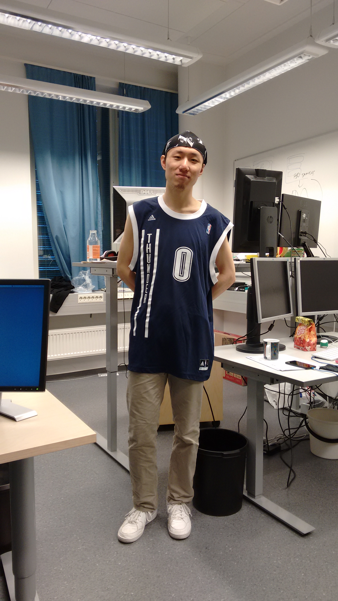

Profile

Degrees:
MSc (2014) in Software Engineering from University of Southampton, UK.
BEng (2013) in Software Engineering from Shanghai Jiao Tong University, China.
Research Interests: Ubiquitous Computing, Mobile Instrumentation, Artificial Intelligence, Discrete Mathematics, Number Theory
Contact: Chu.Luo [at] ee.oulu.fi
Detailed CV Download: [CV]
My Research Group: Center for Ubiquitous Computing
Google Scholar: Google Scholar
DBLP computer science bibliography: DBLP
CV
Education
Doctoral Candidate in Computer ScienceApr. 2015 -- Now, University of Oulu.
Master of Science in Software Engineering with DistinctionSep. 2013 -- Nov. 2014, University of Southampton.
Bachelor of Engineering in Software EngineeringSep. 2009 -- Jul. 2013, Shanghai Jiao Tong University.
Publication
[8] Niels van Berkel, Chu Luo, Theodoros Anagnostopoulos, Denzil Ferreira, Jorge Goncalves, Simo Hosio and Vassilis Kostakos. 2016. A Systematic Assessment of Smartphone Usage Gaps. Proceedings of the 34th Annual ACM Conference on Human Factors in Computing Systems (CHI). (Accepted).
[7] Simo Hosio, Denzil Ferreira, Jorge Goncalves, Niels van Berkel, Chu Luo, Muzamil Ahmed, Huber Flores and Vassilis Kostakos. 2016. Monetary Assessment of Battery Life on Smartphones. Proceedings of the 34th Annual ACM Conference on Human Factors in Computing Systems (CHI). (Accepted).
[6] Jiyou Li and Chu Luo. 2016. The simplified weighted sum function and its average sensitivity. Information Processing Letters 116, 5, 331-336. URL: http://dx.doi.org/10.1016/j.ipl.2016.01.002
[5] Niels van Berkel, Chu Luo, Denzil Ferreira, Jorge Goncalves and Vassilis Kostakos. 2015. The Curse of Quantified-Self: An Endless Quest for Answers. Adjunct Proceedings of the 2015 ACM International Joint Conference on Pervasive and Ubiquitous Computing (UbiComp’15) , 973-978. URL: http://dx.doi.org/10.1145/2800835.2800946
[4] Chu Luo. 2014. Video Summarization for Object Tracking in the Internet of Things. Next Generation Mobile Apps, Services and Technologies (NGMAST), 8th International Conference on. IEEE. URL: http://dx.doi.org/10.1109/NGMAST.2014.20
Preprint
[3] Chu Luo. 2015. A Mathematical Theorem about Northern Europe and Its Proof. URL: http://dx.doi.org/10.13140/RG.2.1.2026.3121 [PDF]
[2] Chu Luo. 2015. Solving a Mathematical Problem in Square War: a Go-like Board Game. arXiv Preprint. URL: http://arxiv.org/abs/1509.09240
[1] Jiyou Li, Chu Luo and Zeying Xu. 2015. The Minimal and Maximal Sensitivity of the Simplified Weighted Sum Function. arXiv Preprint. URL: http://arxiv.org/abs/1505.00887
Erdős number
4
Jiyou Li and Chu Luo. 2016. The simplified weighted sum function and its average sensitivity.
Information Processing Letters 116, 5, 331-336.
URL: http://dx.doi.org/10.1016/j.ipl.2016.01.002
Jiyou Li, David B. Chandler and Qing Xiang. 2010. Permutation polynomials of degree 6 or 7 over finite fields of characteristic 2. Finite Fields and Their Applications 16, 6, 406-419.
Richard M. Wilson and Qing Xiang. 1997. Constructions of Hadamard difference sets. Journal of Combinatorial Theory, Series A 77, 1, 148-160.
Paul Erdös, Joel C. Fowler, Vera T. Sós and Richard M. Wilson. 1985. On 2-designs. Journal of Combinatorial Theory, Series A 38, 2, 131-142.
Random photo
Support or Contact
Having trouble with Pages? Check out the documentation at https://help.github.com/pages or contact support@github.com and we’ll help you sort it out.